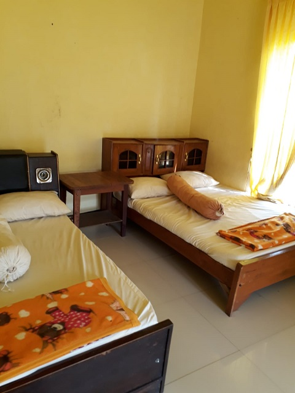

Welcome to Staycation AGB C Universitas Truojoyo Madura
Join us for a memorable staycation on July 4-5, 2024.
Book NowHallo Hallo Semua
Nantikan keseruan Di Villa PacetMerajut Kebersamaan Bersama Kelas Agribisnis C Universitas Trunojoyo Madura
For Your Informasion!!!
Salam sejahtera untuk kita semuaa. Haloo temen-temen Kelas C👋🏻👋🏻inii saatnya yang kalian tunggu-tungguuğŸ˜ğŸ’—🤠Pendaftaran "STAYCATION WITH AGRIBUSINESS-C ‘21" Telah dibukaa!!! Yang akan dilaksanakan pada: 📌Hari : Kamis - Jumat📅Tanggal : 4 - 5 Juli 2024
🕠Tempat : Villa Fanny, Pacet Mojokerto💸 HTM : 125k🛵 Transportasi : Motor dan mobil Pendaftaran & Pembayaran: 19 - 28 Juni 2024 Via Transfer : BRI : 318501008493507 (Yayah Sirly Amriyah) DANA : 0857-4817-5720 (Yayah Sirly Amriyah) COD : Amel (0857-4817-5720) Fariz (0895-2986-0583) Adjie (0838-5275-6580) MORE INFORMATION: Fariz (0895-2986-0583) Adjie (0838-5275-6580) Yukk Buruann Daftar!!! 🙌🏻🤩 Saatnyaa Kalian Gabung dan Rasakan Keseruannyaa..Link Pendaftaran:
https://forms.gle/N2L2PP3xbm9sGWJV7Silahkan masukan jika ada video atau foto lucu dari anak-anak kelas c Terima Kasih :)
Our Services
Luxurious Accommodations
Our villas are designed to provide comfort and luxury, with beautiful interiors and stunning views.
Activitas in Villa
Relax and rejuvenate, may game, wpi unggun, talking abaou historis agb c .
Outdoor Activities
Enjoy a variety of outdoor activities such as hiking, cycling, and guided tours of the local area.
Gourmet Dining
Savor delicious meals prepared by our expert chefs Yesi and friend, using fresh, locally-sourced ingredients :.
Gallery
